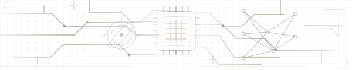

STUDY ARCHIVE
保存过的每一天，都在这里。
填写这项任务实际花费的时间，保存后完成打卡。
按分钟填写，支持小数。多日任务填写本次学习时长，分段累加；共享原任务只记录一次。
YOUR STUDY, KEPT SAFE
导出备份或调整图片保存位置。
导出当前使用的学习记录。登录后，可导入此前保存的本机备份。
导入会合并记录，保留已有的任务和打卡进度。
图片将按浏览器的下载设置保存。
选择一次文件夹，之后导出图片会优先保存到这里。
把这个网址收藏起来，之后直接打开就能继续打卡。
用管理员创建的账号登录。同一账号在不同设备上共用一份手账。
此浏览器会保留登录状态。断网可继续打卡，联网后同步。